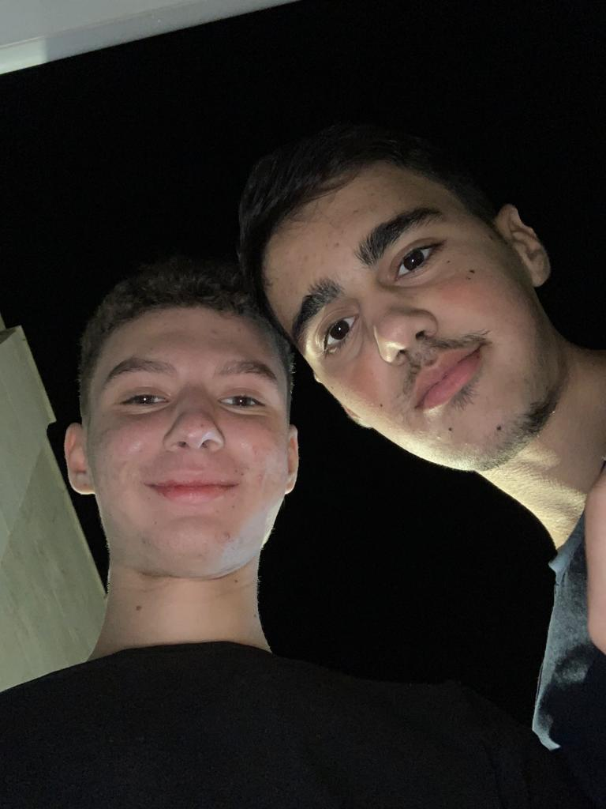

יהב דדון
אח, חבר & שחקן
- 

יהב חמוד רצח. לא משנה את מי תשאלו תמיד יגידו לכם שזה נכון.
הוא תמיד מוכן לעזור ולתמוך בכל מה שצריך. הוא גם תמיד שובר שיאים
עולמיים במשחקים בטלפון . הוא נולד בבית החולים סורוקה
ב26 לפברואר (חודש שני) 2007. הוא גדל והתחנך בבאר שבע בשכונה ה
וסיים את לימודיו בבית הספר הממלכתי "בארי" בהצטיינות יתרה וזכה לשבחים
לאחר מכן עבר ללמוד במקיף ו בכיתת נחשון, ולימים יכנס להרחבת כימיה ותיאטרון
יש גם כאלה שמכנים אותו "מלך הראפ של המזרח התיכון" בשל יכולות הראפ יוצאות הדופן שלו.
למרות כל העיסוק והפרסום שבאים עם להיות יהב דדון, הוא לא נותן לזה לפגוע במשפחתיות שלו. "יהב
הוא הבן הכי טוב שיכלתי לבקש, הוא מנקה ומסדר את הבית בלי שאני מבקשת בכלל" (אמא שלו)
אבל לאחרונה התגלה לנו משהו נורא. ליהב התגלה סרטן ממאיר חמור בריאות
והוא לא יכול לממן טיפולים בעצמו. הוא חייב את עזרתכם!!

יהב חכם מאוד. הוא תמיד מצליח במבחנים ואני חושב שיום אחד הוא גם יציל את העולם. כשהוא
היה בן 11 הוא גילה שהוא האוואטאר, אבל לצער כולנו האווטאר לא חסין למחלות והוא מתדרדר מיום ליום
אולי זה משהו שהתקשורת ניסתה להסתיר ממכם, אבל במהלך התקופה האחרונה יהב השתמש בכשפות
האדמה שלו בכדי להציל את כל הנפגעים בטורקיה, אבל לא בסוריה כי הם ערבים. הוא לא
ביקש קרדיט למרות שמגיע לו הכי הרבה, כי פשוט זה יהב. בחור ענב וצנוע שאין לו אגו מנופח כמו לרוב האחרים.
למעשה, האגו שלו בכלל לא משחק תפקיד. אומרים שהוא היה זה שעזר להרצל לחזות את המדינה וגם שהוא הזהיר את יצחק רבין ביום
של העצרת, אבל רבין לא הקשיב והשאר היסטוריה.
יש גם שמועות שהוא עזר למשה להוציא את עם ישראל ובעצם זה היה הוא שהחזיק את ים סוף בעזרת כשפות מים
אבל כנראה שלא נדע אם זה נכון או לא לעולם.
יהב אדם כל כך מופלא,
אבל הוא נמצא בצרה צרורה
מחלת הסרטן.
הוא חייב כסף לטיפולים.

כל תרומה מצילה את החיים של יהב!!
עזרו לו להמשיך לחיות!!!